インデックスを土台に、好きな企業を100株まで育てる
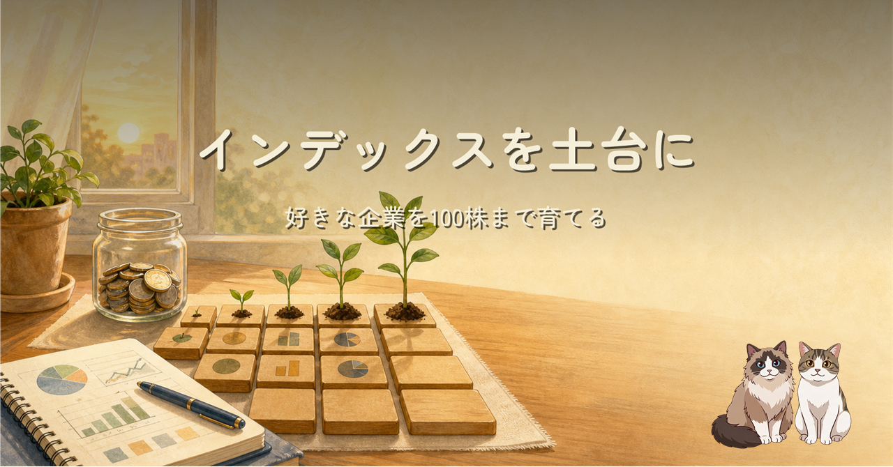
NTTを100株。ソフトバンクも100株。インデックス投資で資産形成の土台をつくり、個別株は普段使う企業や好きな企業を少しずつ持つ。2026年7月時点で、ようやくしっくりきた投資の形を整理しました。
この記事は筆者個人の投資記録であり、特定の金融商品や取引方法を推奨するものではありません。株価、制度、税務、手数料、取扱銘柄、株主優待などは変わります。実際の取引は最新の公式情報を確認し、ご自身の判断と責任で行ってください。
積立の土台と、個別株の楽しみを分ける
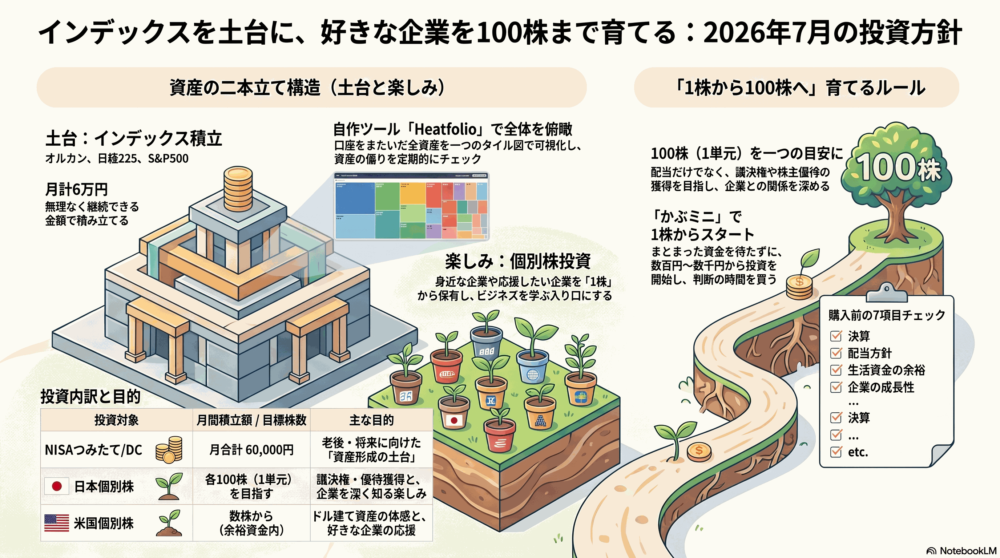
NISAの積立は月5万円、企業型確定拠出年金は月1万円。年間では合計72万円です。枠を全部埋めることより、生活防衛資金と日々の余白を残して続けることを優先しています。
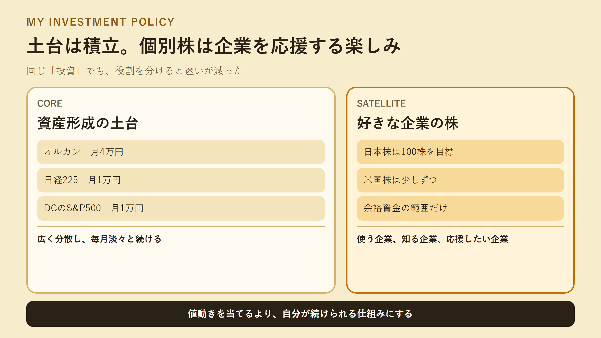
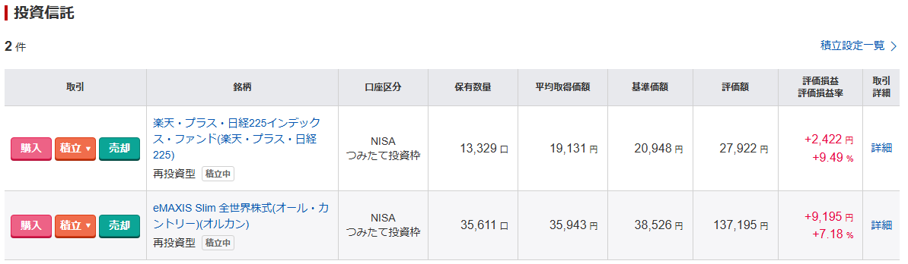
NTTとソフトバンクは100株。次は急がない
日本株ではNTT（9432）とソフトバンク（9434）を100株ずつ保有しています。100株はゴールではなく、決算や事業の変化を継続して見る入口です。
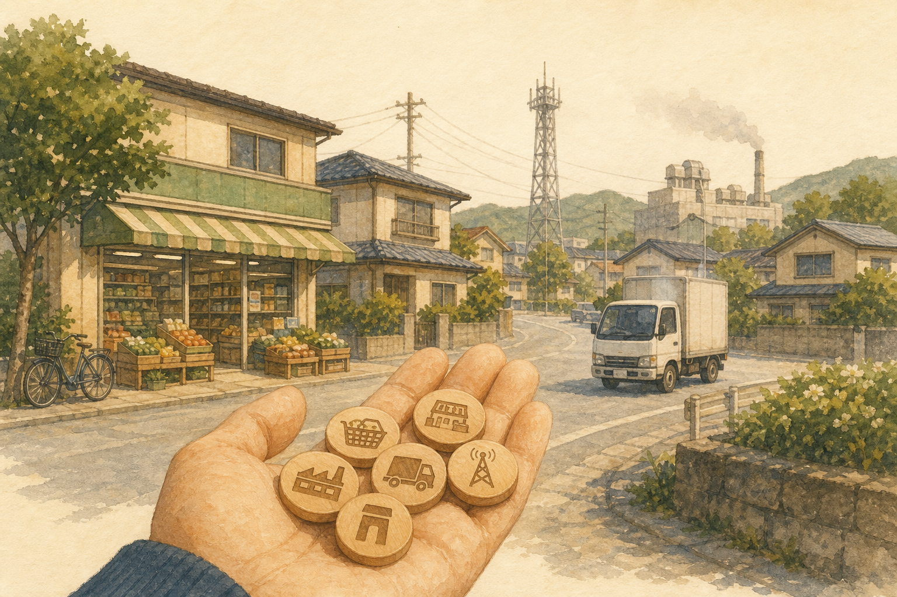
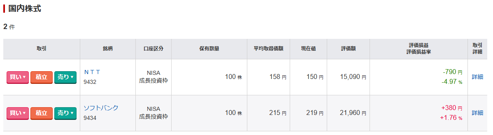
楽天証券のかぶミニは、注文方法の違いも見る
かぶミニは対象銘柄を1株から売買できる単元未満株サービスです。寄付取引とリアルタイム取引では、注文時間、指値の可否、スプレッドの条件が違います。
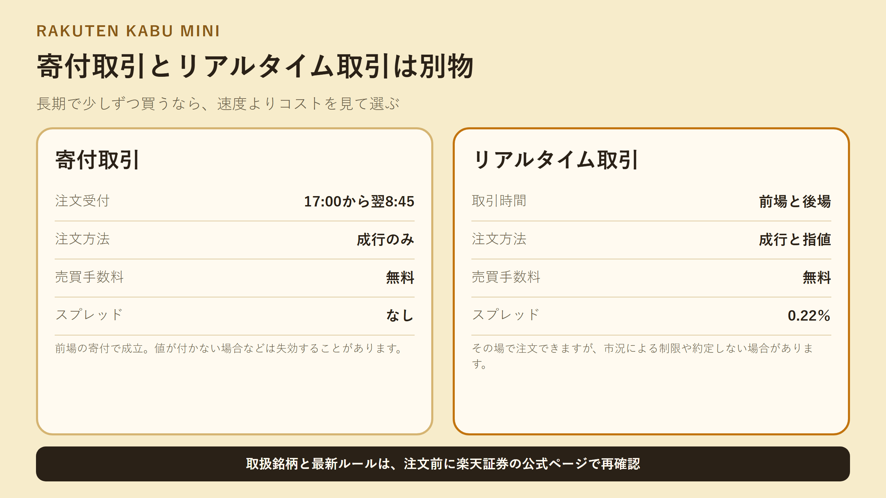
米国株も含め、全体の偏りを見る
米国株は100株を目標にせず、仕事や生活で接点のある企業を少額で持っています。株価だけでなく為替でも評価額が動くため、日本株とは別の値動きになります。
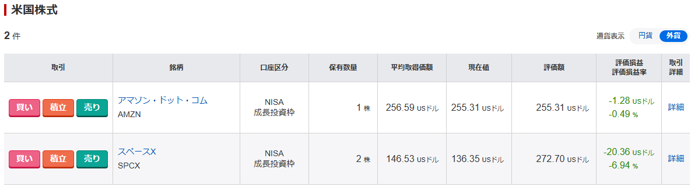
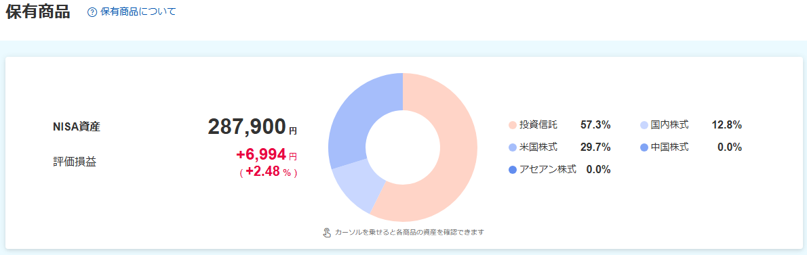
Heatfolioで、口座をまたいだ形を眺める
証券会社、企業型DC、国内株、米国株をまたいだ全体像は、自作OSSのHeatfolioで見ています。評価額をタイルの面積、騰落率を色にして、個別株が積立の土台より大きくなりすぎていないかを確認します。
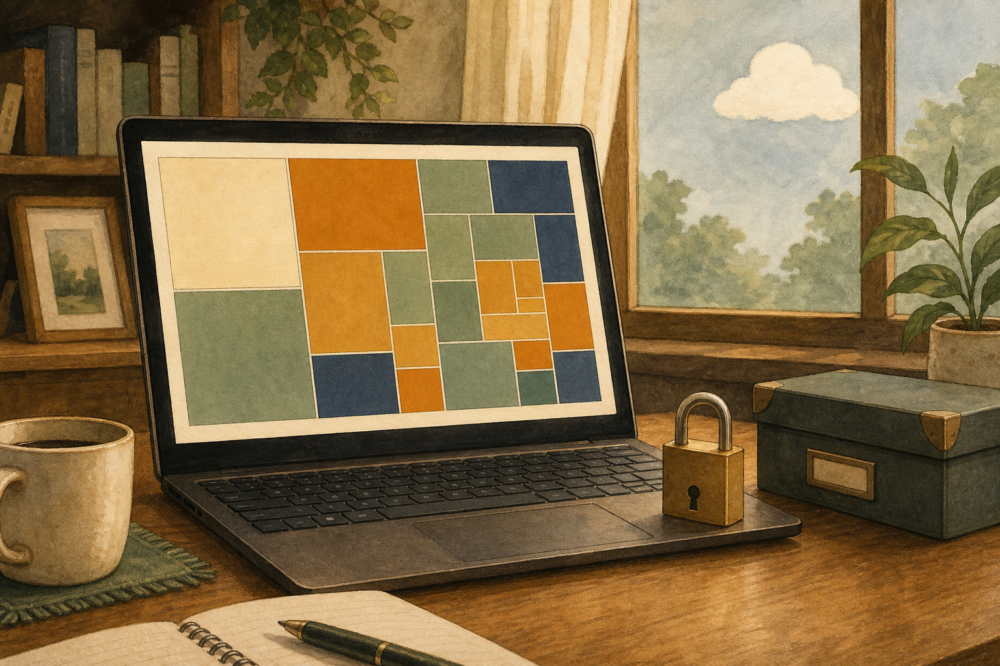
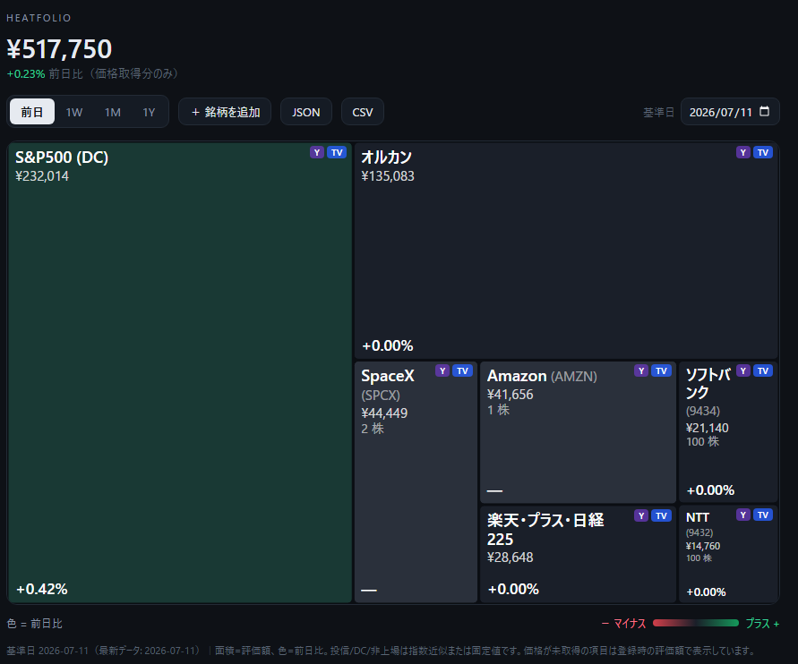
HeatfolioはGitHubで公開しています
証券口座のIDやパスワードを扱わず、保有データをPCローカルへ置く資産ダッシュボードです。Node.js 20以上なら npx --yes heatfolio@latest で試せます。
[PR] 個別企業を見る前に、業界地図を開く
『「会社四季報」業界地図 2026年版』は、幅広い業界を一冊で見渡せて、企業同士や産業同士の関係性、これからの将来性をイメージしやすい本です。図が多く、とっつきやすくて読みやすい。気になる企業の前後にある業界を、ぱらぱら眺める使い方が気に入っています。
『「会社四季報」業界地図 2026年版』をAmazonで見る
※ 上記はAmazonアソシエイトのリンクです。
Amazonのアソシエイトとして、ishizakahiroshiは適格販売により収入を得ています。
買う前に、一度机へ戻る
インデックスは淡々と。個別株は急がず、1株ずつ企業を知る。100株を集めることより、無理なく続けられることを優先します。
制度の確認先
※ ヘッダー画像とインフォグラフィック、本文の挿絵はAI（画像生成）で作成しています。証券口座とHeatfolioの画面は実際のスクリーンショットです。